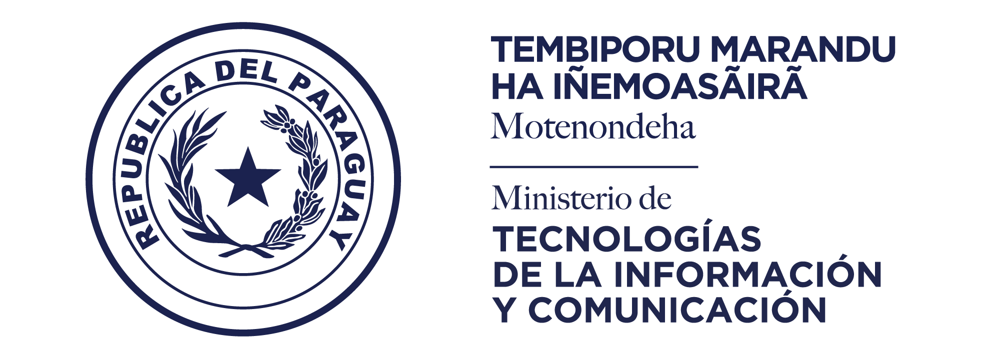

ENTES PÚBLICOS Y PRIVADOS DEL SECTOR INFORMÁTICO
MITIC-MINISTERIO DE TECNOLOGÍAS DE LA INFORMACIÓN Y COMUNICACIÓN
El Ministerio de Tecnologías de la Información y Comunicación fué creado por Ley 6207 de fecha 22 de octubre del 2018 por 2(dos) subsecretarias: El SENATIC (Secretaría Nacional de Tecnologías de la Información y Comunicación), y el SICOM (Secretaría de Información y Comunicación). Es la entidad técnica e instancia rectora en el ámbito de las tecnologías de la información y comunicación en el sector público, y de la comunicación del Poder Ejecutivo. Es el eje prioritario del gobierno por su impacto positivo en la vida de las personas, ya que con un buen uso de tecnología, se pueden alcanzar mucho más rápido soluciones de problemas históricos del país a un costo mucho menor. Uno de los grandes proyectos que está llevando a cabo la MITIC es la Agenda Digital que consiste en la hoja de ruta que nos permitirá dar grandes saltos con el aprovechamiento de Tecnologías de Información y Comunicación (TIC) en la relación del Estado con la ciudadanía y las empresas, la Economía Digital, y el avance de la Conectividad del país.
Cuenta con 4 (cuatro) componentes:- Gobierno Digital
- Economia Digital
- Conectividad
- Fortalecimiento Institucional
 CONACYT-CONSEJO NACIONAL DE CIENCIA Y TECNOLOGÍA
Es un Organismo Público encargado de dirigir y coordinar el funcionamiento del Sistema Nacional de Ciencia, Tecnología, Innovación y Calidad de Paraguay.Es su Misión coordinar, orientar y evaluar el Sistema Nacional de Ciencia, Tecnología e Innovación, promoviendo la investigación científica y tecnológica, la generación, difusión y transferencia del conocimiento; la invención, la innovación, la educación científica y tecnológica, el desarrollo de tecnologías nacionales y la gestión en materia de ciencia, tecnología e innovación; y el Sistema Nacional de Calidad, promoviendo la investigación científica y tecnológica en el área de la Calidad y la aplicación y difusión de los servicios de acreditación, de metrología, de normalización y del sistema de evaluación de la conformidad. La CONACYT es un organismo instalado, consolidado y reconocido por el Poder Ejecutivo y todos los sectores de la sociedad, nacional e internacionalmente, como generador, promotor y articulador de la Ciencia, la Tecnología, la Innovación y la Calidad.
CISOFT-CÁMARA PARAGUAYA DE LA INDUSTRIA DEL SOFTWARE
Es una organización sin fines de lucro que nuclea a las empresas y entidades regionales dedicadas al desarrollo, producción, comercialización e implementación de software en la República del Paraguay. Agrupa a empresas productoras, distribuidoras y desarrolladoras de software así como compañías dedicadas a la prestación de servicios informáticos relacionados con el software y la tecnología. Tiene como Misión principal agrupar, coordinar, sinergizar, desarrollar, colaborar y representar a las diferentes áreas del sector de la Tecnología Electrónica, Informática, Comunicaciones y TIC´s en su camino de mejora competitiva y creación de cadenas propias de valor o de inserción en las cadenas de valor de otros negocios globales. La CISOFT ofrece varios Servicios a todas las entidades que lo necesiten.
CNC(UNA)-CENTRO NACIONAL DE COMPUTACIÓN
Es una institución que se ha caracterizado siempre por contar con personas con una inmensa capacidad de adaptarse a los cambios, es así que hemos traído la primera computadora al Paraguay, hemos materializado la primera conexión a Internet del país, se han constituído el Network Information Center del Paraguay (NIC. PY), el primer Punto de Intercambio de Tráfico de Internet del país (IX Py). CNC busca ser una institución reconocida nacional e internacionalmente por su excelencia, la calidad e innovación de sus servicios a la UNA, al Estado y a la sociedad paraguaya en lo referente a las TIC. Atesoramos lo mejor, su satisfacción en nuestros servicios es el motor que nos impulsa a seguir persiguiendo logros en este competitivo ámbito de las TIC. Tambien prestan servicio de DNS (Domain Name Service) a todos los sitios nacionales con seguridad y calidad; desarrollar, mantener y actualizar sistemas y soluciones informáticas que sirvan de soporte a las actividades académicas, de investigación, de extensión y de administración de la UNA, así como del Estado y la sociedad, ofrecer cursos de capacitación y actualización relacionadas con las TIC.

CPI-CENTRO PARAGUAYO DE INGENIEROS
Cuando en 1926 se creó la Facultad de Ciencias Físicas y Matemáticas, señalaron la necesidad de que éste loable emprendimiento tuviera el apoyo y la cooperación de la Sociedad de Ingenieros del Paraguay. Paralelamente, en 1926, se constituía el Centro de Estudiantes de Ingeniería, más tarde, la mayoría iba a confluir para fundar el actual Centro Paraguayo de Ingenieros. Después de la guerra, la primera sociedad de ingenieros, quedó desintegrada. Entonces se reunieron en una sesión solemne en la oficina del entonces Ministro de Economía, Ing. José Bozzano, el 23 de Julio de 1939 quedaba oficialmente constituído el Centro Paraguayo de Ingenieros. Esa comisión directiva quedó integrado con el Ing. José Bozzano como presidente, el Arq. Tomás Romero Pereira como vicepresidente, Don Luis Paleari como secretario y por ultimo el Ing. Electricista Pablo Daumas como tesorero.
EL Acta de Fundación de la Institución señalaba los siguientes objetivos:
- Relacionar y vincular entre sí a sus componentes a fin de facilitar la cooperación y la ayuda mutua.
- Mancomunar esfuerzos para el mantenimiento de un alto ideal profesional.
- Promover el adelanto de las ciencias y el arte del ingeniero y ciencias y artes afines.
- Representar al gremio ante el país y sus autoridades, a fin de que pueda ser escuchado y consultado en cuestiones de orden técnico.